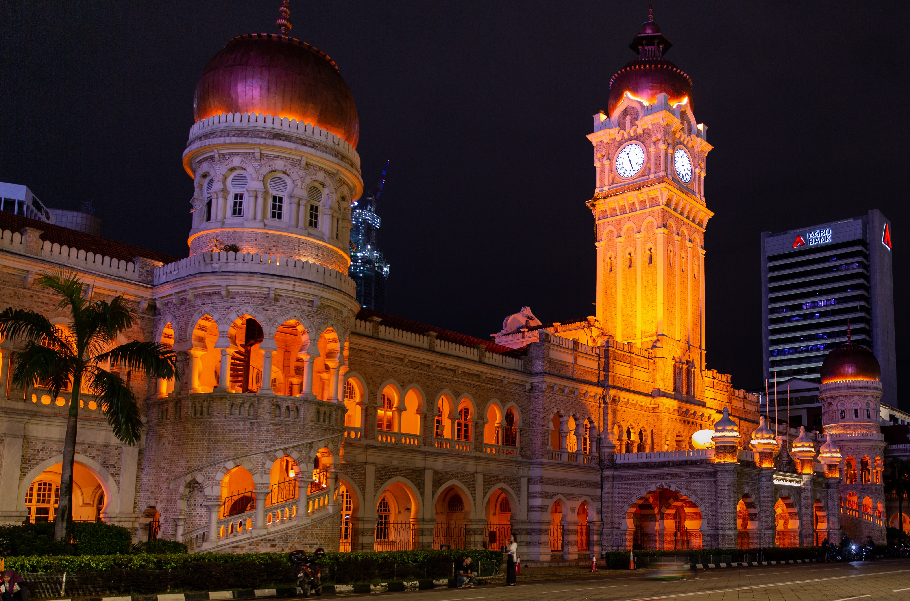

Why Kuala Lumpur?
Kuala Lumpur, the Garden City of Lights
Kuala Lumpur, or KL was initially a tin mining settlement in the 1880's and has since grown into a modern hub with a population just over 8.5 million people.
The city is known to boast beautiful patches of greenery, gardens, and parks along with stylish skyscrapers which is why it is known as the Garden City of Lights. There is an abundance of culture with large portions of the population originating from China and India, and of course the native Malay. Because of this, you will find delicious food, street markets, and rich architecture.